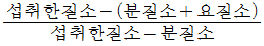
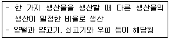

축산기사 (2007-05-13 기출문제)
1과목: 가축육종학
1. Yorkshire 종과 Berkshire 종 돼지를 교배할 때 F2에 있어 흑색 돼지가 나타나는 비율은?
- 1/4
- 2/4
- 3/4
- 4/4
(정답률: 69%)

2. 선발차를 형질의 표현형 표준편차로 나눈 것은?
- 선발지수
- 선발반응
- 선발방법
- 선발강도
(정답률: 64%)
3. 다음 중 비대립 유전자 간의 상호작용이 아닌 것은?
- 억제유전자
- 복대립유전자
- 상위유전자
- 동의유전자
(정답률: 51%)
4. 가축의 양적형질은 어떤 변이에 속하는가?
- 유전적 변이
- 환경적 변이
- 연속적 변이
- 불연속적 변이
(정답률: 59%)
5. 연관(linkage)과 교차(crossing over)의 설명이 옳은 것은?
- 연관과 교차는 규칙적인 유전법칙을 갖는다.
- 연관된 유전자 간에는 교차가 잘 일어나지 않는다.
- 연관된 유전자 간에는 교차가 잘 일어난다.
- 연관과 교차는 무관하다.
(정답률: 57%)
6. 젖소의 주요 경제형질인 산유량과 유지율 개량을 위한 수컷의 선발에 이용이 불가능한 검정방법은?
- 후대검정
- 가계선발
- 능력검정
- 자매검정
(정답률: 58%)
7. 산란용 닭의 선발 요건으로 가장 거리가 먼 것은?
- 산란을 많이 할 것
- 체중이 무거운 것
- 난중이 무거운 것
- 사료 소비량이 적은 것
(정답률: 89%)
8. 닭에 있어서 완두관과 장미관을 교배하면 호두관이 되는 것은 어느 유전자의 작용으로 발현되는 것인가?
- 변경유전자
- 상위유전자
- 보족유전자
- 억제유전자
(정답률: 80%)
9. 다음 형질 중 간역형질(threshold character)에 해당하는 것으로 가장 적합한 것은?
- 성비(sex ratio)
- 사료 이용성
- 비유능력
- 닭의 황반 우모색
(정답률: 48%)
10. 돼지의 품종 중 산자수가 많고, 비유능력이 양호하며 새끼 돼지를 잘 키우는 품종은?
- Berkshire 종
- Hampshire 종
- Landrace 종
- Duroc 종
(정답률: 82%)
11. 원형질과 함께 완전한 생활기능을 발휘하고 진화에 응하는 최소한도의 염색체 수의 1벌을 의미하는 것은?
- DNA
- RNA
- Polydactyl
- Genome
(정답률: 73%)
12. 다음 중 RNA에만 존재하는 질소 염기는?
- Uracil
- Adenine
- Guanine
- Thymine
(정답률: 86%)
13. 다음 젖소의 경제형질 중 유전력이 가장 낮은 것은?
- 수태율
- 유량
- 일당증체량
- 유지방함량
(정답률: 55%)
14. 어느 종돈 군에서 154일령 체중에 대하여 선발된 암퇘지와 수퇘지의 선발차가 각각 4kg과 6kg이고, 이때의 유전력이 20%라면 유전적 개량량은 얼마인가?
- 0.6kg
- 0.8kg
- 1.0kg
- 1.2kg
(정답률: 69%)
15. 부모 A와 B가 서로 반형매(half-sib)일 때 이들에서 태어난 자손의 근친도는?
- 5%
- 12.5%
- 25%
- 50%
(정답률: 64%)
16. 일반적으로 가축의 생산능력이 떨어지는 근친교배를 실시하는 이유로서 틀린 것은?
- 특정 유전자의 고정
- 불량한 열성 유전자의 제거
- 근친 계통간의 잡종 강세 이용
- 이형 1 접합체의 증가
(정답률: 73%)
17. 육우의 교잡 목적으로 부적합한 것은?
- 번식능력, 생존율, 초기성장 등에서 잡종강세를 이용하기 위하여
- 품종간 상보효과(complementation)를 이용하기 위하여
- 강력유전현상(prepotency)을 이용하기 위하여
- 새로운 유전인자를 도입하여 유전적 변이를 크게 하기 위하여
(정답률: 65%)
18. 돼지의 등지방 두께에 대한 유전력은 0.5로 고도의 유전력을 나타내고 있다. 이와 같이 유전력이 높은 형질을 개량하는 데 있어 가장 좋은 선발 방법은?
- 개체 선발
- 혈통 선발
- 형매 검정
- 후대 검정
(정답률: 68%)
19. 다음의 염색체 이상 현상 가운데 성격이 다른 것은?
- 중복현상(duplication)
- 이수현상(aneuploidy)
- 역위현상(inversion)
- 전좌현상(translocation)
(정답률: 82%)
20. 다음 중 당대검정우의 구비 조건에 해당되지 않는 것은?
- 종빈우에서 태어나고 생후 160일령 이전에 이유한 수송아지일 것
- 등록기관에 혈통등록이상으로 등록돼서 혈액형검사결과 친자가 확인된 것
- 외모심사 평점이 60점 이상일 것
- 생후 180일령 체중이 150kg 이상일 것
(정답률: 70%)
2과목: 가축번식생리학
21. 다음 중 성(性)성숙에 영향을 미치는 요인이 아닌 것은?
- 계절
- 온도
- 영양
- 바람
(정답률: 70%)
22. 성선(性腺)에서 분비되는 호르몬 중 스테로이드 호르몬이 아닌 것은?
- testosterone
- relaxine
- estrogen
- progesterone
(정답률: 65%)
23. 소의 수정란 이식에 있어서 다배란 유기 방법 중 틀린 것은?
- FSH를 사용한다.
- PMSG를 사용한다.
- PGF2α를 사용한다.
- 에스트로겐을 사용한다.
(정답률: 46%)
24. 소에서 정자가 정소상체를 통과하는데 필요한 시간은?
- 10일
- 15일
- 20일
- 25일
(정답률: 33%)
25. 정상적인 돼지에 있어 배란이 일어나는 시기로 가장 적합한 것은?
- 발정개시 직후
- 발정을 개시 36~44시간 후
- 발정이 끝났을 무렵
- 발정이 끝난 지 24시간 후
(정답률: 55%)
26. 가축 인공수정의 장점 설명으로 옳은 것은?
- 가축의 개량에 큰 효과가 있다.
- 숙련된 기술자가 아니라도 수태율에는 이상이 없다.
- 종모축의 선택에 관계없이 능력 개량이 가능하다.
- 정자의 보관은 어디에나 장기간 가능하기 때문에 편리하다.
(정답률: 70%)
27. 다음 중 수정란이식의 장점은?
- 종모축의 이용률을 증대시켜 가축의 능력을 개량할 수 있다.
- 종모축의 사양관리의 부담이 경감된다.
- 종모축의 유전능력을 조기에 판단할 수 있다.
- 종빈이 보유하고 있는 난자를 최대로 활용할 수 있다.
(정답률: 44%)
28. 다음 중 젖소에서 편리하게 사용할 수 있는 호르몬 분석에 의한 임신 진단법은?
- 자궁경관 점액 검사법
- 직장 검사법
- 우유 중의 프로게스테론 측정법
- 우유 중의 에스트로겐 측증법
(정답률: 59%)
29. 유선에 대한 설명 중 틀린 것은?
- 유선의 발생학적 원기는 내배엽이다.
- 유즙을 분비하는 기본 구조는 유선포이다.
- 유선에서 비유가 개시되는 데는 프로락틴(prolactin)의 역할이 가장 중요하다.
- 유선의 조직학적 구조는 복합 관상 포상선으로 되어 있다.
(정답률: 65%)
30. 다음 중 쌍각자궁(Bicornuate uterus)의 형태를 가진 가축은?
- 소
- 돼지
- 토끼
- 산양
(정답률: 80%)
31. 젖소의 성성숙 월령으로 가장 적합한 것은?
- 8~13개월
- 15~20개월
- 22~27개월
- 29~34개월
(정답률: 69%)
32. 다음 암소 중 성성숙이 가장 느린 품종은?
- Ayrshire
- Holstein
- Guernsey
- Jersey
(정답률: 54%)
33. 다음 정액채취방법 중 소에서 가장 많이 사용하는 이상적인 방법은?
- 전기자극법
- 맛사지법
- 인공질법
- 콘돔법
(정답률: 70%)
34. 난소의 기능 이상으로 나타나는 번식장해가 아닌 것은?
- 무발정
- 이형발정
- 배란장해
- 수정장해
(정답률: 32%)
35. 다음 중 소의 평균 발정지속 시간으로 가장 적합한 것은?
- 15~18시간
- 30~32시간
- 50~55시간
- 7일
(정답률: 59%)
36. 포유동물에서 정자의 완성과정을 4단계로 나눌 수 있는데, 그 순서를 올바르게 나열한 것은?
- 두모기 - 골지기 - 첨체기 - 성숙기
- 골지기 - 두모기 - 첨체기 - 성숙기
- 두모기 - 첨체기 - 골지기 - 성숙기
- 골지기 - 첨체기 - 두모기 - 성숙기
(정답률: 58%)
37. 성선자극호르몬인 FSH와 LH의 생리작용과 유사한 작용을 하는 태반호르몬들을 서로 바르게 연결한 것은?
- FSH - GnRH, LH - HCG
- FSH - PMSG, LH - GnRH
- FSH - PMSG, LH - HCG
- FSH - HCG, LH - PMSG
(정답률: 64%)
38. 사출된 정액에 들어있는 정자의 생존성과 운동성에 결정적인 영향을 미치는 요인에 속하지 않는 것은?
- 습도, 계절
- 전해질, 온도
- 산소량, 광선
- pH, 삼투압
(정답률: 53%)
39. 다음 중 젖소의 적당한 건유 기간은?
- 약 40일
- 약 50일
- 약 60일
- 약 70일
(정답률: 78%)
40. 젖소의 유선포 상파세포에서 분비된 유즙의 이동경로로 옳은 것은?
- 유선포 → 유선엽 → 유선관 → 유두조 → 유두관
- 유선포 → 유선조 → 유선관 → 유두조 → 유듀관
- 유선포 → 유선엽 → 유선조 → 유두조 → 유두관
- 유선포 → 유선관 → 유선엽 → 유두조 → 유두관
(정답률: 60%)
3과목: 가축사양학
41. 포도당과 갈락토오스가 각각 1분자씩 결합 된 것으로서 포유동물의 젖 속에 들어 있는 것은?
- 서당(Sucrose)
- 맥아당(Maltose)
- 유당(Lactose)
- 과당(Fructose)
(정답률: 74%)
42. 질소 함량이 2% 되는 사료의 조단백질 함량으로 가장 적합한 것은?
- 6.25%
- 8.25%
- 10.25%
- 12.50%
(정답률: 42%)
43. 건초의 안전한 저장을 위해서 수분함량은 몇 % 이하여야 하는가?
- 35%
- 25%
- 20%
- 15%
(정답률: 79%)
44. 사료 내 각종 영양소 중 Methionine과 Choline의 체내에서의 공통된 작용은?
- 유효 Methyl기 공급
- Sulfur 공급
- 면역 항체의 합성
- 각기병 예방
(정답률: 52%)
45. 이상(異常)돼지고기는 근육이상, 체지방 이상 및 기타 고기품질이상 형태를 말하는데, 다음 중 근육 이상 돼지고기가 아닌 것은?
- PSE
- 백근증
- DFD
- 황돈육
(정답률: 50%)
46. 비유중인 젖소의 체유지를 위한 정비에너지 요구량을 계산하는 공식 중 옳은 것은?
- 70 W0.75
- 75 W0.75
- 80 W0.75
- 85 W0.75
(정답률: 27%)
47. 불포화지방산 가운데 2중 결합의 수가 3개인 지방산은?
- 스테아린산(Stearic acid)
- 팔미틴산(Palmitic acid)
- 리놀레닌산(linolenic acid)
- 리놀레인산(Linoleic acid)
(정답률: 41%)
48. 비유 젖소의 배합사료를 가공하는 방법 중 이용효율이 가장 높은 방법은?
- 수침(Soacking)
- 볶기(Roasting)
- 튀기기(Popping)
- 박편처리(Flaking)
(정답률: 67%)
49. 가축 체내의 축적지방의 주 형태는?
- monoglyceride
- diglyceride
- triglyceride
- free fatty acid
(정답률: 63%)
50. 다음 중 근괴사료에 속하는 것은?
- 타피오카
- 캐놀라 밀
- 옥수수 글루텐
- 채종박
(정답률: 55%)
51. 거세우에게 저에너지 사료(L), 중에너지 사료(M) 및 고에너지 사료(H)를 90일 동안 각각 급여했을 때 도체의 최종 체지방함량을 가장 높이는 급여방법은?
- L - L - L
- L - L - H
- H - M - L
- H - H - H
(정답률: 50%)
52. 유지율을 높이는 효과가 있는 것은?
- 아세트산(acetic acid)
- 프로피온산(propionic acid)
- 낙산(butyric acid)
- 젖산(lactic acid)
(정답률: 50%)
53. 볏짚을 알칼리 처리할 때 기대할 수 있는 가장 큰 효과는?
- 볏짚 중 섬유소의 소화율이 향상된다.
- 볏짚 중 비타민 B군 합성량이 증가한다.
- 볏짚 중 미량광물질 함량이 증가한다.
- 볏짚에 납두균이 증가한다.
(정답률: 63%)
54. 일반적으로 도체등급과 경제성을 고려한 비육우의 사육방법으로 가장 적당한 것은?
- 조사료로 육성 및 비육
- 조사료로 육성 후 농후사료로 비육
- 농후사료로 육성 후 조사료로 비육
- 농후사료로만 육성 및 비육
(정답률: 71%)
55. 수용성 비타민 중에는 주로 영양소의 대사과정에서 조효소(coenzyme)로 관여하는 비타민이 많은데 다음 중 이 기능과 관계가 없는 비타민은?
- 티아민
- 리보플라빈
- 토코페롤
- 판토텐산
(정답률: 48%)
56. 단백질효율(PER)을 바르게 표시한 것은?

- 축적된질소량/섭취한질소량
- 중체량(g)/단백질섭취량(g)
- 생물가 × 소화율(%)
(정답률: 52%)
57. 사료첨가용 요소(N : 45%) 30ton이 있다면 단백질량으로 환산할 때 대두박(단백질 : 44%) 몇 ton에 해당하는가?
- 약 31 ton
- 약 84 ton
- 약 192 ton
- 약 371 ton
(정답률: 53%)
58. 점간점진법은 산란계의 산란율을 증가시키기 위해 최대 얼마까지의 점등시간을 연장해 점당관리를 하는가?
- 15시간
- 17시간
- 19시간
- 21시간
(정답률: 63%)
59. 다음 중 필수 아미노산이 아닌 것은?
- 세린(serine)
- 라이신(lysine)
- 메치오닌(methionine)
- 발린(valine)
(정답률: 83%)
60. 단백질의 품질을 측정하는 생물가(BV)의 설명으로 맞는 것은?
- 가소화 단백질의 체단백질로의 이용가치
- 유사 단백질의 체내 이용가치
- 에너지의 증체에 대한 이용률
- 가소화 영양소의 총 열량 수준
(정답률: 67%)
4과목: 사료작물학 및 초지학
61. 경운 초지를 조성할 때 작업순서로 옳은 것은?
- 장해물 제거 - 경운 - 쇄토 및 정지 - 시비 - 파종 - 복토 및 진압
- 장해물 제거 - 쇄토 및 정지 - 경운 - 시비 - 파종 - 복토 및 진압
- 장해물 제거 - 경운 - 시비 - 쇄토 및 정지 - 파종 - 복토 및 진압
- 경운 - 장해물 제거 - 쇄토 및 정지 - 시비 - 파종 - 복토 및 진압
(정답률: 31%)
62. 불경운 초지 대상지와 관계가 먼 것은?
- 경사가 심하여 기계작업이 어려운 곳
- 단기간에 목양력을 증가시킬 필요가 있는 곳
- 토양유실이 염려되어 개간이 어려운 곳
- 황폐된 목초지를 부분적으로 갱신하고자 하는 곳
(정답률: 62%)
63. 다음 중 체중 500kg인 젖소의 1일 생초 급여량으로 가장 적합한 것은?
- 100~125kg
- 50~75kg
- 35~50kg
- 75~100kg
(정답률: 44%)
64. 다음 목초의 수확기와 영양가의 변화에 대한 설명 중 틀린 것은?
- 화본과 목초의 최적수확기는 출수기이다.
- 콩과식물은 최적수확기가 개화 초기부터 개화 말기까지이다.
- 화본과 목초에 있어서 출수기에 단백질과 지방의 함량이 증가한다.
- 콩과목초는 청예수량이 많을 때 영양수량도 증가한다.
(정답률: 34%)
65. 사료작물은 생존연한에 따라 일년생초, 월년생초, 단년생초 및 다년생초로 구분하는데 다년생에 속하는 화본과 및 두과작물은?
- 수단그라스, 자운영
- 오차드그라스, 알팔파
- 이탈리안라이그라스, 스위트클로버(Hubam종)
- 토올페스큐, 매듭풀
(정답률: 47%)
66. 다음 중 오차드그라스의 주요 병해가 아닌 것은?
- 탄저병
- 검은 녹병
- 줄무늬마름병
- 맥각병
(정답률: 32%)
67. 다음 중 윤작의 효과가 아닌 것은?
- 수량증가와 품질향상
- 작부체계 운용의 단순화
- 환원가능 유기물의 확보
- 토양 전염성 병충해의 발생감소
(정답률: 59%)
68. 사료작물재배에 있어 가축사양의 부산물인 퇴구비를 사료생산포에 환원시켜주는 일이 토양에 미치는 영향 중 옳은 것은?
- 지력의 유지 및 증진
- 지력의 악화
- 지력과는 관계없음
- 연작피해의 증가
(정답률: 70%)
69. 다음 중 사일리지용으로 널리 재배되는 옥수수 종류는?
- 마치종
- 폭립종
- 감립종
- 연립종
(정답률: 64%)
70. 목초의 파종량을 늘려주지 않아도 좋은 경우는 다음 중 어느 때인가?
- 발아율이 나쁠 때
- 파종기가 지났을 때
- 건조할 때
- 토양의 수분함량이 충분할 때
(정답률: 55%)
71. 우리나라의 경우 화강암 또는 화강편마암에서 유래 하는 대부분의 토양 특성상 알팔파의 재배 및 채종을 하고자 할 때 특히 유의해야 할 점은?
- 토양의 건조상태
- 토양의 유기물 함량
- 석회 및 붕소의 시용
- 질소비료의 추비
(정답률: 46%)
72. 북방형 목초의 하고현상에 가장 많은 영향을 미치는 것은?
- 고온건조
- 생육기의 전환
- 근류의 분해
- 바이러스 병의 발생
(정답률: 76%)
73. 사일리지를 제조할 때 단점인 것은?
- 화재의 위험이 없다.
- 잡초를 방제한다.
- 기호성이 증가한다.
- 비타민D 함량이 감소한다.
(정답률: 71%)
74. 사일리지의 숙성에 필요한 최소한의 저장기간은?
- 3~4일
- 2~3주
- 30~40일
- 3~4개월
(정답률: 54%)
75. 사일리지의 품질을 향상시키는 첨가제로 부적당한 것은?
- 암모니아
- 당밀
- 요소
- 전분질 사료
(정답률: 44%)
76. 다음 중 경운용 작업기로 가장 적합한 것은?
- 도저
- 쟁기
- 해로우
- 레이크
(정답률: 40%)
77. 수단그라스계 잡종의 청예 이용에 관한 설명으로 잘못된 것은?
- 초장이 너무 낮을 때 예취하여 급여하면 청산중독의 위험이 있다.
- 너무 낮게 수확하면 재생이 늦어지고 죽어 없어지는 개체가 발생하므로 5cm 이하로 예취하지 않는 것이 좋다.
- 비가 오기 직전에 예취하는 것이 비가 온 후 충분한 수분으로 인하여 재생이 잘 된다.
- 자주 예취가 가능한 조ㆍ중생종에 비하여 대가 굵고 키가 크게 자라는 만숙종은 출수되는 것을 보지 못할 때도 있다.
(정답률: 51%)
78. 다음에 열거한 요인 중 사일리지의 발효에 가장 영향을 적게 미치는 것은?
- 재료의 수분함량
- 재료의 조단백질 함량
- 재료의 수용성 탄수화물 함량
- 재료의 조지방 함량
(정답률: 61%)
79. 건초의 품질을 평가하는 방법으로 Rohwede 등 (1978)의 상대적 사료가치(relative feed value)가 많이 이용되고 있다. 알팔파 건초의 상대적 사료가치가 101~123일 경우 어느 등급에 속하는가?
- 1등급
- 2등급
- 3등급
- 4등급
(정답률: 35%)
80. 불경운 초지조성시 선점식생을 제거하는 방법 중 틀린 것은?
- 강방목(强放牧)
- 제초제(除草劑)
- 화입(火入)
- 시비(施肥)
(정답률: 57%)
5과목: 축산경영학 및 축산물가공학
81. 번식돈 경영에서 수익성에 긍정적인 영향을 미치는 요인이 아닌 것은?
- 육성률을 높인다.
- 분만두수가 많은 종돈을 선택한다.
- 종돈의 사육비용을 높인다.
- 연간 분만횟수를 늘린다.
(정답률: 64%)
82. 축산경영조직에 있어서 단일화의 장점으로 맞는 것은?
- 농기구나 시설의 도입이 용이
- 자금회전의 원활화
- 토지의 합리적인 이용과 토지비용의 감소
- 노동력배분의 평준화 및 수입의 평균화
(정답률: 44%)
83. 축산경영에서 공동조직의 원칙에 해당하지 않는 것은?
- 민주화의 원칙
- 공평의 원칙
- 유리성의 원칙
- 경쟁의 원칙
(정답률: 66%)
84. 축산경영의 일반적 특징에 해당하는 것은?
- 농업의 안정화
- 물량감소의 성격
- 토지의 이용증진
- 노동력의 이용증진
(정답률: 48%)
85. 축산경영 규모를 측정하는 척도가 아닌 것은?
- 토지면적
- 조생산액
- 자본회전율
- 가축두수
(정답률: 47%)
86. 다음은 생산물의 결합형태 중 무엇에 관한 설명인가?

- 보합생산
- 결합생산
- 경합생산
- 보완생산
(정답률: 62%)
87. 한우 번식경영에 관한 설명으로 틀린 것은?
- 사육규모가 영세하다.
- 적당한 운동이 필요하다.
- 번식간격의 단축이 과제이다.
- 농후사료를 많이 급여하여야 한다.
(정답률: 70%)
88. 계란 1kg의 가격이 1500원이고, 사료 1kg의 가격은 250원일 경우 난사비는?
- 2.0
- 5.0
- 6.0
- 4.0
(정답률: 55%)
89. 생산함수 중 수확(收穫)체증인 형태의 설명으로 맞는 것은?
- 투입물의 각 추가단위에 대하여 생산물이 동일한 양으로 증가하는 생산함수
- 생산요소를 추가로 투입할수록 그에 따라 얻어지는 추가 생산물의 비율이 점점 높아가는 생산함수
- 생산요소를 추가로 투입할수록 그에 따라 얻어지는 추가 생산물의 비율이 점점 작아지지만 총생산량은 증가하는 생산함수
- 생산요소를 추가로 투입할수록 그에 따라 얻어지는 추가 생산물의 비율이 점점 증가하지만 총생산량은 감소하는 생산함수
(정답률: 44%)
90. 취득원가 100만원, 폐기가격 10만원, 내용연수가 5년인 고정자본재의 감가상각비는 얼마인가? (단 , 정액법으로 계산)
- 20만원
- 19만원
- 18만원
- 17만원
(정답률: 66%)
91. 자산을 구입할 경우 구입가격과 구입시 소요되는 제반비용을 합산하여 평가하는 방법은?
- 시가 평가법
- 수익가 평가법
- 추정가 평가법
- 취득원가법
(정답률: 58%)
92. 토지가 다른 고정자본재와 달리 감가상각을 필요로 하지 않는 이유로 올바른 것은?
- 조사료를 생산하기 때문에
- 토지 자체가 소모되지 않기 때문에
- 토지의 지력이 소모되지 않기 때문에
- 토지가 지역에 따라 자연적 여건이 다르기 때문에
(정답률: 71%)
93. 축산경영 효율지표 중 경제적 효율지표가 아닌 것은?
- 축산자본 회전율
- 축산노동단위당 자본투하액
- 축산물 1kg당 사료비
- 비육돈 일당 증체량
(정답률: 41%)
94. 시험성적이나 전문가의 경험을 토대로 가장 이상적인 진단지표를 작성한 뒤 잔단농가와 비교하는 경영진단 방법은?
- 자기진단법
- 직접비교법
- 표준비교법
- 지수법
(정답률: 49%)
95. 비육돈의 비육기간이 90일이고, 이 기간 동안 증체량이 54kg이었다면 1일당 증체량은?
- 600g
- 550g
- 500g
- 450g
(정답률: 67%)
96. Norfolk 윤재식 농법에서 지력증진 작목으로 재배한 것은?
- 보리
- 밀
- 벼
- 클로버
(정답률: 52%)
97. 비육우의 두당 조수입이 270만원, 소득이 81만원일 때 소득률은?
- 60%
- 50%
- 40%
- 30%
(정답률: 64%)
98. 축산경영자의 역할 중 경제적 측면의 기능에 해당하지 않는 것은?
- 사료작물과 가축의 종류 선택 및 결정
- 생산과정 관리
- 경영성과분석 및 계획 수립
- 생산부문의 경영집약도 결정
(정답률: 37%)
99. 양돈비육농가가 자돈을 30kg에 구입하여 106일 동안 사육한 후 체중이 110kg일 때 출하하였다. 이 기간 동안 비육돈 두당 사료섭취량은 228kg이었다면 이 농가의 총사료 요구율은?
- 2.75
- 2.80
- 2.85
- 2.90
(정답률: 60%)
100. 양계의 수익성을 극대화하기 위한 방안이 아닌 것은?
- 폐사율을 감소시킨다.
- 품질 및 상품가치의 균일성을 유지시킨다.
- 생산능력을 향상시킨다.
- 사료요구율을 높인다.
(정답률: 74%)